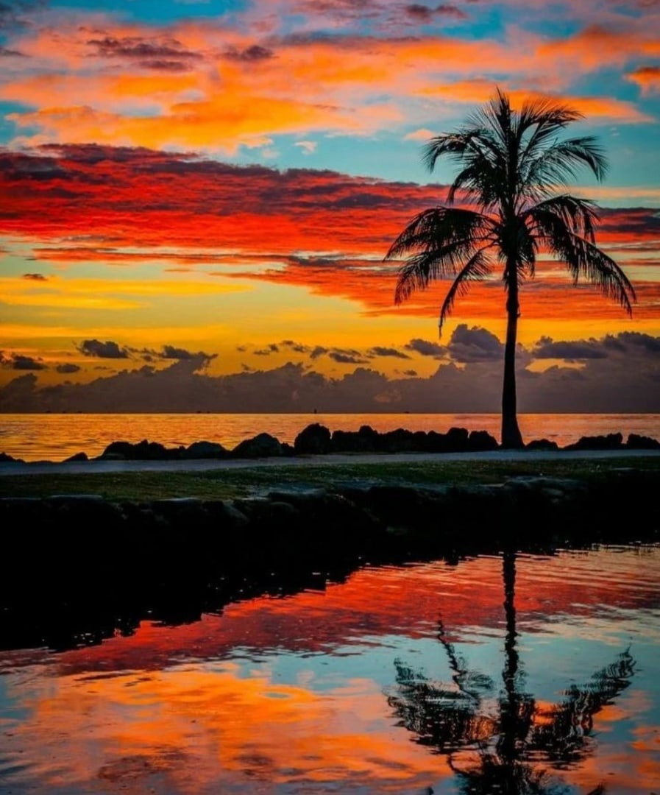

Чутка обо мне
Меня зовут Девятов Илья:
Абсолютная ссылка.
"It's me".

Относительная ссылка.
"Here i would like to live".

Моя страничка в Контакте.
Моя страничка в Однокласниках.
Мои хобби
- Работа на огороде
- Стройка
- Радиогубительство
Мои цели
- Закончить учебу
- Устроится на хорошую работу
- Переехать В Новую Зеландию на ПМЖ